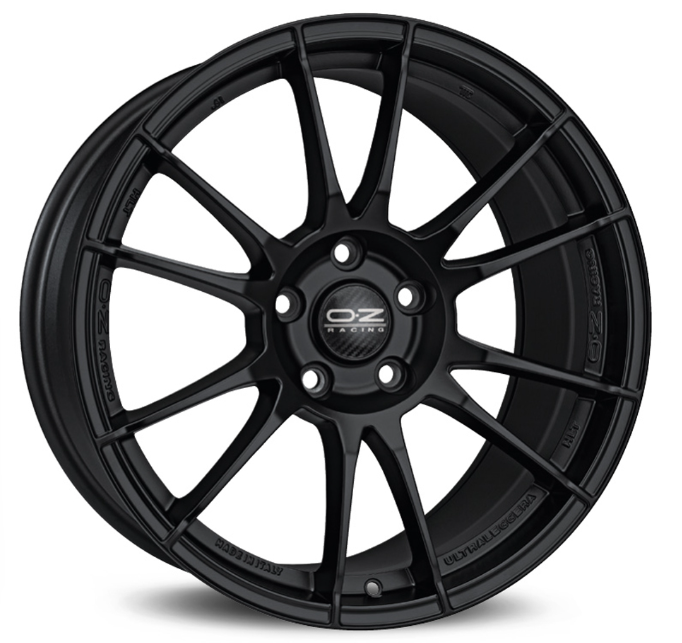

Styles sélectionnés
Naviguez une sélection soignée de designs allant du classique au contemporain.
LES BONNES ROUES CHANGENT TOUT
Donnez à votre voiture un look qui vous ressemble. Découvrez une sélection soigneuse de jantes, des styles quotidiens propres aux designs audacieux qui se démarquent.
Explorez nos jantes
Quand le style rencontre la route
Les jantes sont la partie extérieure d'un roue, et elles font une grande différence sur l'apparence de votre voiture. Un bon ensemble peut apporter un style frais à votre véhicule tout en correspondant à la façon dont vous l'utilisez au quotidien. La taille et l'adaptation comptent également, donc vérifiez toujours qu'une jante est compatible avec votre voiture avant d'acheter.
Naviguez une sélection soignée de designs allant du classique au contemporain.
Nous facilitons la comparaison des options et la recherche de jantes adaptées à votre véhicule.
Que vous souhaitiez un rafraîchissement subtil ou un look plus audacieux, commencez par un style que vous aimez.